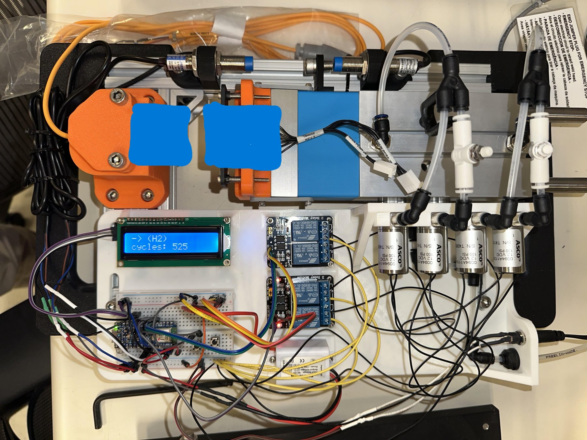
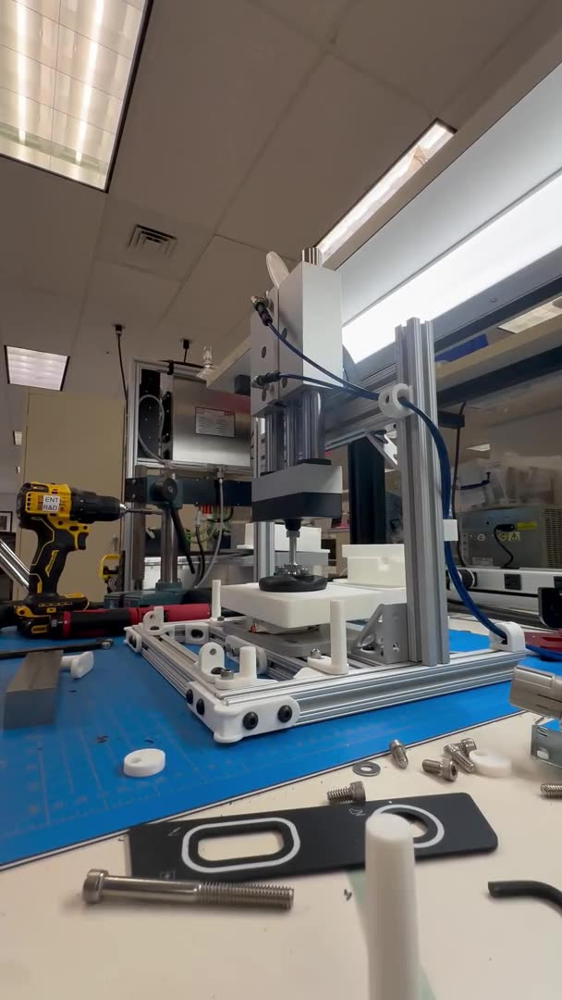
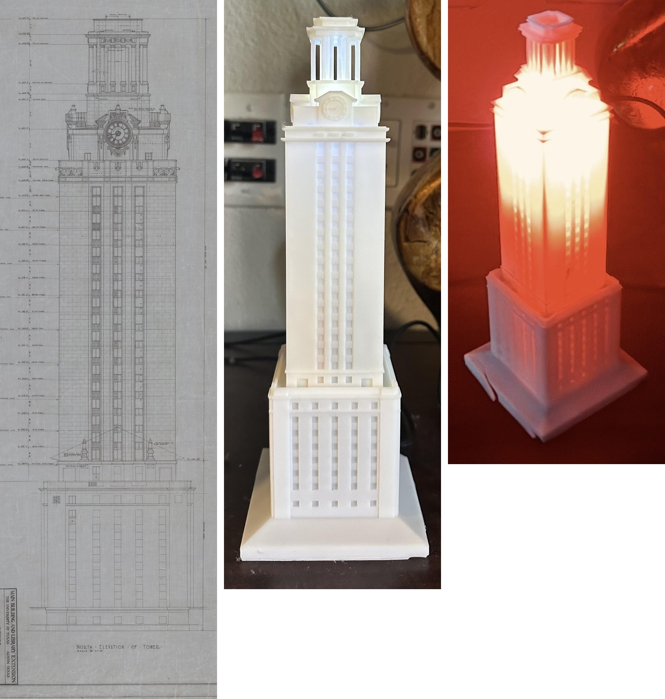
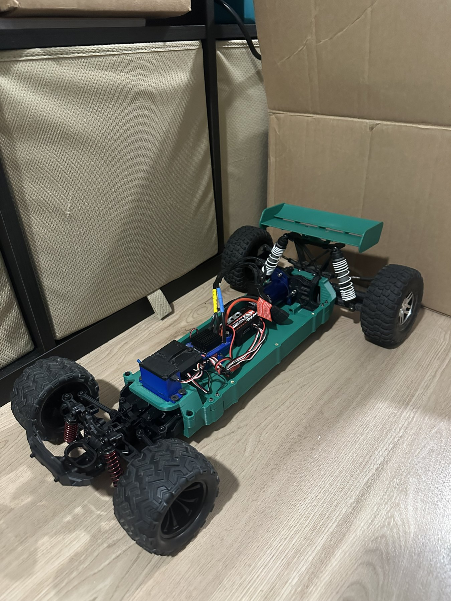
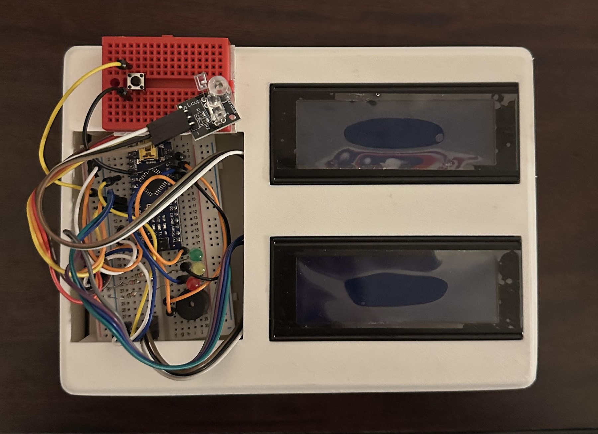

Hardware that has to work.
I build test rigs, production fixtures, and small embedded devices. Most of that has been in medical device R&D at Smith+Nephew and International Biomedical.

Selected work
About me →
Automated connector lifetime test rig
Pneumatic plug/unplug cycler with Hall-effect stroke verification, a custom KiCad PCB, and auto-pause for plug swaps. Quantified receptacle wear over 7,500 cycles and caught a vendor spring substitution in preliminary testing.

Pneumatic lamination press
All-pneumatic, self-resetting press for touchscreen and bezel assemblies. Drawings and BOMs handed off for line adoption.

nternet-Link
The hardware side of an open platform that puts a TI-Nspire on the network: four generations of plug-in adapters, printed shells, and a 40 x 15 mm custom PCB, with a community that now writes the firmware. 39 stars.

IoT UT Tower ornament
Modeled from the original blueprints in SolidWorks and resin printed; an ESP32 in the base polls the university's lighting page and lights the model to match. Interactive 3D model on the page.

RC car chassis
One printed tub carrying a drivetrain and suspension salvaged from broken RC cars. I designed the chassis; the team built the rest.

Vertical-axis wind turbine + indicator circuit
Printed helical rotor on a generator, AC-to-DC conversion, and an analog indicator circuit: too slow, too fast, and brightness that tracks speed.

Overdose emergency aid device
A MAX30100 and a microphone, scoring pulse, SpO2, and breathing into a risk score that drives Narcan prompts on an LCD. Two builds: Arduino Nano, then ESP8266.
About
Mechanical engineering student at UT Austin, graduating May 2027. Most of my work has been in medical device R&D, where documenting everything and testing early became habit. I like problems that sit between mechanical, electrical, and software, and I tend to build the test rig before I trust the part.
Outside of work I design and publish open hardware on GitHub. Open to full-time mechanical, test, and R&D engineering roles starting 2027. US citizen.
Tools: SolidWorks (GD&T to ASME Y14.5, surfacing, tolerance analysis, FEA), KiCad, Arduino and ESP32, Python, MATLAB, Lua, pneumatics, thermocouple and Hall-effect instrumentation, FDM and SLA printing, CNC, laser cutting, composite layups.
Experience
- International BiomedicalMechanical Engineering Intern, Austin, TX · detailsMay 2026 - now
- Smith+NephewR&D Engineer Co-op, ENT, Austin, TX · detailsJun - Dec 2025
- MINIMAX Lab, UT AustinResearch Assistant, micropumps + textbook storyboards · detailsAug 2024 - Apr 2026
- GoProProduct Evaluation Tester, Maui, HI · detailsJan - Mar 2022